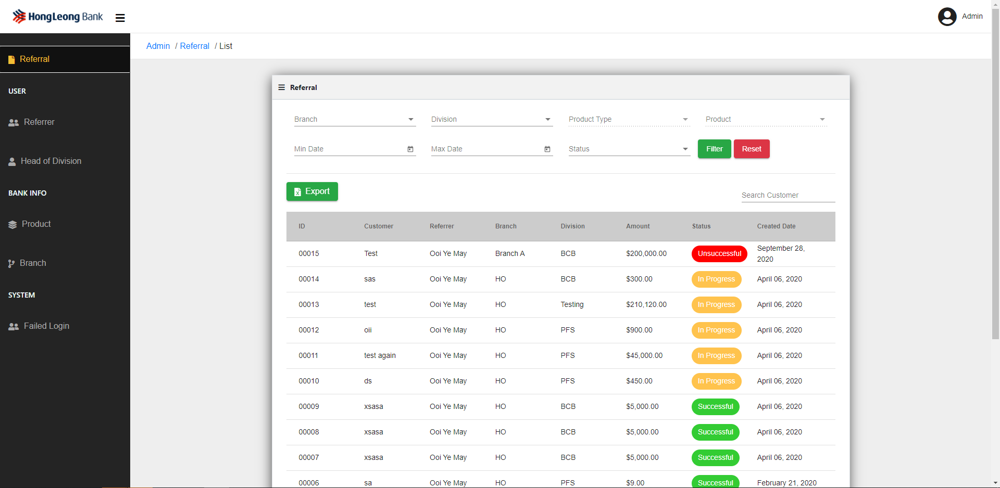
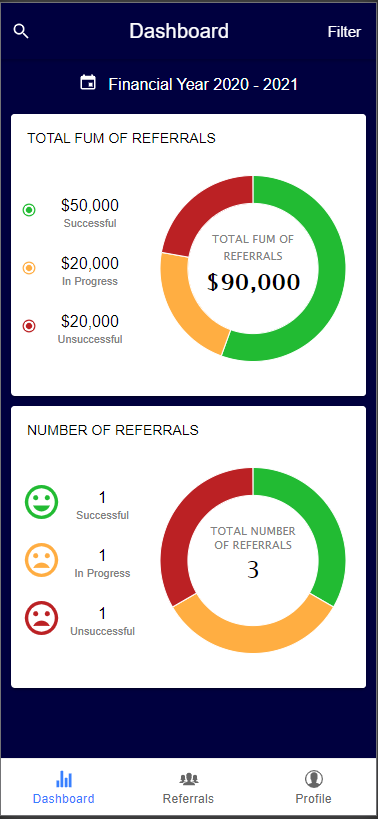
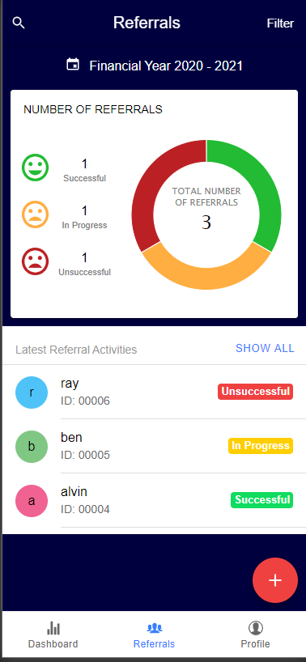

<div class="mainBlock exp" id="exp">
    <div class="container">
        <div class="row col-md-12 mg0">
            <!-- <div class="closeBtn" (click)="close()">X</div> -->
            <div class="block-title col-md-12">
                Referral App | Admin Portal
            </div>
            <div class="col-md-7">
                <div class="row col-md-12 col-sm-12 col-xs-12 mg0 pg0 block-img">
                    <div class="col-md-12 col-sm-12 col-12  mgt10 pg0">
                        
                    </div>
                    <div class="col-md-12 col-sm-12 col-12  mgt10 pg0">
                        
                        
                    </div>
                </div>
            </div>
            <div class="col-md-5">
                <div class="block-desc-title col-md-12">
                    Description
                </div>
                <div class="block-date col-md-12">
                    Oct 2019 – Mar 2020
                    <br>
                    <div class="col-md-12 col-sm-12 col-12  mgt10 pg0 comp">
                        
                    </div>
                    <br>
                </div>
                <div class="block-desc col-md-12">

                    Developing an crossed platform APP support for iOS and Android and Web Admin
                    Portal for Hong Leong Bank Cambodia internal staff. This project is aim to provide ease for staff on
                    process of submit and manage on customer loan documentation through the APP efficiently. Clean and
                    user friendly dashboard allow staff to view on their total amount sold of all approved loans. Apart
                    from approved loan, there is also pending and rejected loan percentage calculated in the app. App
                    will also display submitted loan status such as approved, pending and rejected in different color
                    tag. Staff able to filter a period of time to check their submitted loan documentation status and
                    details.
                    <br>
                    <br>
                    Admin Portal allow administrator of Hong Leong Bank Cambodia to manage and configure the
                    accessibility or functionality of each user to use the APP such as staff, manager, admin etc. Admin
                    able to view, sort and filter by different parameters such as date, status, products, branch,
                    referrer ID of each submitted loan by referrers (Staff) as a record checking. Admin able to create
                    branch and assign branch manager, create new products under a tree such as Personal Loan, Mortgage
                    Loan etc. System will also logged each events executed through the admin portal for future reference
                    such as login, logout and functionality logs.
                </div>
            </div>
            <div class="col-md-12 link">URL : <a>CONFIDENTIAL</a>
            </div>
        </div>
    </div>
</div>